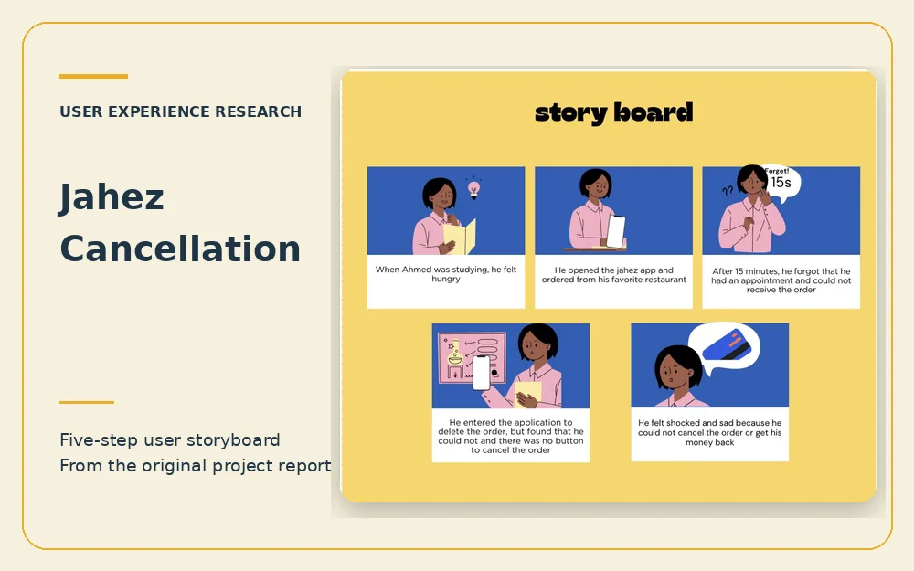
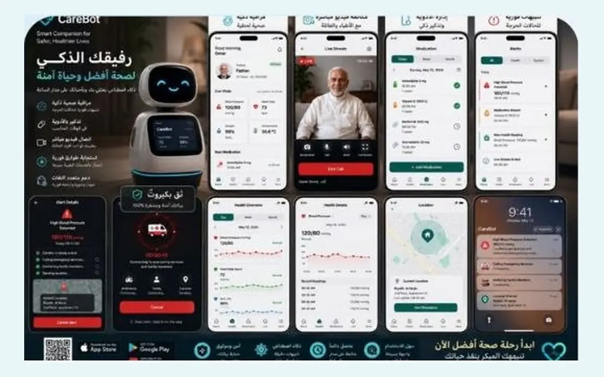

07
User Research
Jahez — Order Cancellation UX Research
Personas, journey maps, and user stories built around fixing one missing feature: a cancel button.
Extra work beyond the six featured projects. Each project below stands on its own.

Personas, journey maps, and user stories built around fixing one missing feature: a cancel button.

Vue 3, Node.js, and MongoDB Atlas powering a real-time digital menu with full CRUD.

Nielsen's 10 Heuristics applied to two live Saudi charitable donation platforms.

A caregiving robot experience combining vital monitoring, medication reminders, family communication, and emergency response.

Hands-free coffee ordering with clear dialogue flows, customization, confirmation, and error recovery.